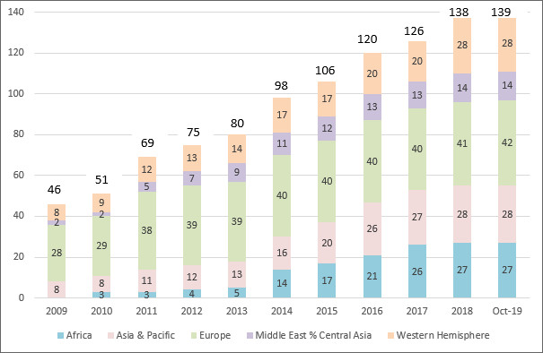

Financial Soundness Indicators and the IMF
Last Updated: April 2019
| To access FSI data and metadata reported on a regular basis by member countries go to FSI Reporting (Data & Metadata) (Google Chrome is recommended for navigating the FSI website) |
Financial soundness indicators (FSIs) provide insight into the financial health and soundness of a country’s financial institutions as well as corporate and household sectors. FSIs support economic and financial stability analysis.
Following an initial consultative meeting of experts and a survey of member countries, the IMF’s Executive Board endorsed a list of core and encouraged FSIs in June 2001. In June 2003, the IMF Executive Board reviewed progress and discussed the way forward on the work program for FSIs and welcomed the ongoing work on the development, compilation, and use of FSIs, as well as the broad support provided by member countries, international organizations, and other standard-setting bodies in this exercise. At that time, Executive Directors commended the completion of the draft Financial Soundness Indicators Compilation Guide (Guide), which they considered a milestone in establishing a standard reference on concepts and definitions for the compilation of FSIs by the Fund’s membership.
FSI Reporting Countries
The IMF’s Statistics Department disseminates on the Fund’s FSI website reporting countries’ data and metadata on selected FSIs according to the methodology set out in the Guide; many reporting countries also post these data on their national websites. Steady progress has been made in increasing FSI country coverage. As of September 2018, 138 jurisdictions report FSIs (data and metadata) to the Fund on a regular basis, including all Group of Twenty (G-20) countries (Figure 1).
Figure 1. Financial Soundness Indicators: Reporting Countries and Economies

Source: IMF’s FSI website.
Reporting countries and jurisdictions compile FSI data using different approaches. As such, FSI users are advised to consult the accompanying metadata to better understand cross-country comparisons or to assess the evolution of a given FSI for any of the reporters.
Financial Soundness Indicators Compilation Guide
The primary purpose of the Guide is to provide information and advice on the concepts and definitions as well as on data sources and techniques, for the compilation and dissemination of the list of core and encouraged FSIs (Table 1). The Guide defines the types of financial institutions and sets out detailed accounting rules, such as time of recognition of positions and flows, valuation of instruments, and conceptual advice on individual line items in the income and expense and balance sheet accounts, from which the underlying series used to calculate many FSIs should be drawn. It elaborates the concepts of, and preferred approaches to, aggregation and consolidation. Guidance is also provided on measurement issues for real estate prices and certain financial market information.
Practical advice on data sources, compilation issues, and on the dissemination of data is provided along with methods of assembling and analyzing peer group data. Appendices to the Guide include numerical examples to illustrate some of the more complex conceptual issues. The Guide is available in English, Chinese, French, Russian, and Spanish.
Table 1. Financial Soundness Indicators: The Core and Additional Sets
|
FSI Code Core FSIs for Deposit Takers | |
| I01 |
Regulatory capital to risk-weighted assets |
| I02 |
Regulatory Tier 1 capital to risk-weighted assets |
| I03 |
Nonperforming loans net of provisions to capital |
| I04 |
Nonperforming loans to total gross loans |
| I05 |
Sectoral distribution of loans to total loans |
| I06 |
Return on assets |
| I07 |
Return on equity |
| I08 |
Interest margin to gross income |
| I09 |
Noninterest expenses to gross income |
| I10 |
Liquid assets to total assets |
| I11 |
Liquid assets to short-term liabilities |
| I12 |
Net open position in foreign exchange to capital |
| Additional FSIs for Deposit Takers | |
| I13 |
Capital to assets |
| I14 |
Large exposures to capital |
| I15 |
Geographical distribution of loans to total loans |
| I16 |
Gross asset position in financial derivatives to capital |
| I17 |
Gross liability position in financial derivatives to capital |
| I18 |
Trading income to total income |
| I19 |
Personnel expenses to noninterest expenses |
| I20 |
Spread between reference lending and deposit rates (base points) |
| I21 |
Spread between highest and lowest interbank rates (base points) |
| I22 |
Customer deposits to total (noninterbank) loans |
| I23 |
Foreign-currency-denominated loans to total loans |
| I24 |
Foreign-currency-denominated liabilities to total liabilities |
| I25 |
Net open position in equities to capital |
| FSIs for Other Financial Corporations | |
| I26 |
Assets to total financial system assets |
| I27 |
Assets to gross domestic product |
| FSIs for Nonfinancial Corporations | |
| I28 |
Total debt to equity |
| I29 |
Return on equity |
| I30 |
Earnings to interest and principal expenses |
| I31 |
Net foreign exchange exposure to equity |
| I32 |
Number of bankruptcy proceedings initiated |
| FSIs for Households | |
| I33 |
Household debt to gross domestic product |
| I34 |
Household debt service and principal payments to income |
| FSIs for Market Liquidity | |
| I35 |
Average bid-ask spread in the securities market |
| I36 |
Average daily turnover ratio in the securities market |
| FSIs for Real Estate Markets | |
| I37 |
Residential real estate prices (Percentage change/last 12 months) |
| I38 |
Commercial real estate prices (Percentage change/last 12 months) |
| I39 |
Residential real estate loans to total gross loans |
| I40 |
Commercial real estate loans to total gross loans |
Source: FSI Compilation Guide
Revision of the Financial Soundness Indicators Compilation Guide
In November 2011, as part of a broad consultation process with the international expert community, the IMF’s Statistics Department convened a meeting of the Financial Soundness Indicators Reference Group (FSIRG) that was attended by representatives from 32 countries and 10 international and regional organizations. The meeting reviewed (1) the current list of core and additional FSIs against the backdrop of the global financial crisis, changes in the regulatory framework facing financial institutions (the so-called Basel Accords in the banking sector), and the G-20 call for enhanced reporting and dissemination of these indicators (see the 2009 Report to the G-20 Finance Ministers and Central Bank Governors on The Financial Crisis and Information Gaps); and (2) discussed and agreed on a work program and actions for updating the FSI list. Based on the FSIRG's Summary of Key Points and Conclusions, the IMF's Statistics Department has developed a work program on FSIs that will include revision of the 2006 Guide. The revised FSI Guide will reflect new and emerging methodological and compilation issues, newly added FSIs, and analytical tools that could enhance usefulness of these indicators for policy analysis.
In September 2013, IMF staff informed the Executive Board of its intention to revise the list of FSIs in response to users’ needs and financial sector developments (see Modifications to the Current List of Financial Soundness Indicators and Modifications to the Current List of Financial Soundness Indicators—Background paper). The revised FSI list includes new indicators to expand the coverage of the financial sector to include money market funds, insurance corporations, pension funds, other nonbank financial institutions, as well as non-financial corporations and households. Detailed descriptions and compilation issues related to these new FSIs will be elaborated in the revised Guide.
In the context of the G-20 Data Gaps Initiative (DGI), the Fund has also been called upon to investigate the possibility of regular collection of standard measures that can provide information on tail risks, concentrations, variations in distributions, and the volatility of FSIs over time. Consequently, the revised FSI Guide will also include so-called concentration and distributions measures (CDMs) to further enhance the usefulness of the FSIs. CDMs provide information that is not revealed by averages, making them an additional tool for monitoring financial sector vulnerabilities and risks. The CDMs could include the following indicators: (1) minimum, maximum, and mean; (2) weighted standard deviation and skewness; (3) quartiles and the asset share of the bottom quartile; and (4) a concentration (Herfindahl)
In April 2017, the IMF Statistics Department hosted two events: the Workshop on Financial Soundness Indicators (FSIs): A Users’ Perspective (April 26-27); and the Meeting of the FSIRG (April 28) to share experiences with the use of FSIs in financial surveillance and to collect feedback for the work program for the revision of the FSI Guide including the way forward with FSIs and CDMs.
In light of the discussions during these two events, the IMF’s Statistics Department, in coordination with the FSIRG, revised the FSI Guide and posted the prepublication version of the 2019 FSI Guide on April 26, 2019. This prepublication draft is subject to final editing for its publication in book form. Versions of this guide in other languages will follow in due course.
Reference Material and Background Documents
FSIRG's Summary of Key Points and Conclusions; Statistics Department; November 15–16, 2011.
IMF Executive Board Concludes Financial Soundness Indicators—Experience with the Coordinated Compilation Exercise and Next Steps
Public Information Notice (PIN) No. 07/135 November 20, 2007.
Amendments to the Financial Soundness Indicators (FSIs): Compilation Guide (Guide). November 7, 2007.
Financial Soundness Indicators: Experience with the Coordinated Compilation Exercise and Next Steps: Background Paper. October 18, 2007.
Countries Take Stock of Financial Soundness Exercise. June 18, 2007.
Financial Soundness Indicators: Compilation Guide, 2006.
Progress on the Financial Soundness Indicators Work Program. June 14, 2005.
Stress Testing Financial Systems: What to Do When the Governor Calls (pdf file).
Matthew T. Jones, Paul L. Hilbers, and Graham L. Slack
IMF Working Paper No. 04/127 (2004).
Experts Meeting on Financial Soundness Indicators (October 29-30, 2003) (pdf file).
Public Information Notice (PIN) No. 03/71 (June 13, 2003) .
Financial Soundness Indicators. May 14, 2003.
Financial Soundness Indicators-Background Paper. May 14, 2003.
Availability of Financial Soundness Indicators (pdf file).
Graham Slack. IMF Working Paper No. 03/58 (2003).
Experts Meeting on Financial Soundness Indicators (October 21, 2002) (pdf file).
Financial Soundness Indicators: Analytical Aspects and Country Practices.
V. Sundararajan, Charles Enoch, Armida San José, Paul Hilbers, Russell Krueger, Marina Moretti, and Graham Slack . IMF Occasional Paper No. 212. April 8, 2002.
Macroprudential Indicators of Financial System Soundness.
IMF Occasional Paper No. 192. April 8, 2000.
Consultative Meeting on Macroprudential Indicators (September 27, 1999) (pdf file).